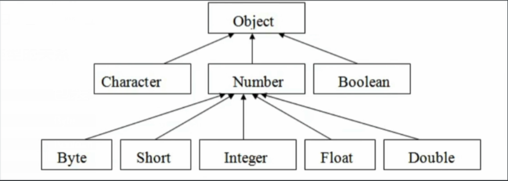

Java 包装类、数组与字符串基础
- 面向对象 :
基本类型包装类 :
基本类型 (代表具体数值) != 引用类型 ( 代表对象的引用 )

设计了包装类 ：实现将 基本类型 当作 引用类型来用
基本类型包装类 : 继承Number :
Integer a = Integer.valueOf(222); == ( 自动装箱机制) Integer a = 222; ( Java9之后去除 new 创建的方法 ) { 内部传入value 后会变为final 类型 }
Integer a = Integer.valueOf(222 , 进制数(实现自动转化));
Integer a = 222 ;
int p = a + 10 ;
int p = a.intValue() * b.intValue() ;
Integer a = 333 , b = 2 ;
Integer c = 333 ;
System.out.println( a == c );
节省内存开销( -127 ~128 )会使用内部创建好的缓存对象
快速转化类型 -> 函数 : (byte) == 对象.byteValue() ;
对象1.compareTo() : 输出 0 ( 相等 ) ; 输出 1 ( 对象1大 ) , 输出 -1 ( 对象1小 )
toString() , toHexString 可以转化为16 进制的字符串
- 特殊包装类
BigInteger 类 : 用于储存超大数据 ;
不支持自动 装箱 和 拆箱
存入数据时 使用valueOf函数 : 内部数据传入时末尾要加上L
BigInteger a2 = BigInteger.valueOf(1211212223423423L);
BigInteger b2 = BigInteger.valueOf(Long.MAX_VALUE);
BigInteger c2 = BigInteger.valueOf(Long.MAX_VALUE) ;
计算 ：
BigInteger result = i.multiply(i) ; 实现乘法 ;
add : 加法
subtract : 减法
remainder : 除法
内部函数 a2.pow() ; 实现惊人的数据大小
BigInteger remainder = a.remainder(b);
BigDecimal 类: 储存巨大精度的小数
不支持自动 装拆
divide 除法 ( 除数 , 保留位数精度 , (四舍五入 , 向上取整 ))
BigDecimal d = BigDecimal.valueOf(29);
BigDecimal result = d.divide(BigDecimal.valueOf(3), 199999 , RoundingMode.HALF_UP);
加减乘法同上
实现取余 ：
BigDecimal remainder = a.remainder(b);
- 数组( 存储的是基本数据类型 不能储存对象 )
int[] arr = new int[ n ] ; n表示大小
类型[] 变量名 先声明 再传值
变量名 = new int[] { 数据 } : 静态初始化
直接初始化 ; 类型[] 变量名 = { 数据 } ;
可以使用Object obj 来获取arr ;
可以使用arr的内部函数 length ;
数组类型是引用类型 : 不同对象 { 即使内容相同}
二维数组 : int[][] arr = new int [2 ] [ ] ;
arr[ x ] = new int [y] ; ( 设置x 行为 y 列 ) ;
实现数组的全部输出 : sout(Arrays.toString(arr)) ;
- 可变长参数
main方法中 :
方法( 对应类型的数据 ) ;
方法( 类型 ) 当有可变长参数的时候只能存在一个且要放到末尾 : 不可控制大小
便捷操作 : 可引用类型.for + 回车 自动变换为for的范围循环
args 实际上是指令行 ,从程序外构造出的程序实参
- 字符串
String 本身就是类
使用 new String() 创建的类型 : 是最快的 ;
使用toString() 创建的类型 : 有点慢 ;
java17 之前是 char类型 ;
java17 之后是 byte类型 ;
会底层优化 : 不明确创建对象 的话 实际还是引用
切割函数 : substring( 起始位置 , 切割长度 ) ; 返回的是一种新的对象
分割函数 : String[] arr = 变量名.split("分割位置所需的字符")
直接使用工具类来打印数组 : Arrays.toString(arr) ;
通过 字符串变量 . toCharArray() ; 可以实现获取一个char类型的数组
char[] chara = {'1' ,'2' , '3'} ;
System.out.println(new String(chara));
String s1 = "hell o " ;
String[] brr = s1.split(" ");
System.out.println(s1.replace("hell", "ciall" ));